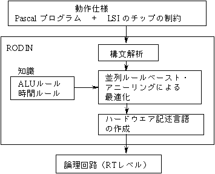

（７０）論理アーキテクチャ設計支援システム：ＲＯＤＩＮ
マ シ ン：Multi-PSI
環 境：PIMOS 3.4
言 語：KL1
ソース量：3.5 MB
文 書：マニュアル (日本語／英語)
概要
Pascal言語で記述された動作仕様からレジスタ・トランスファ・レベルの回路
を合成する。
機能及び特徴
- 高水準言語(Pascal)で記述されたアルゴリズムと回路の制約条件を動作仕
様として与えると、制約を満たし、かつ準最適な論理回路を生成する。
- 出力される論理回路（レジスタ・トランスファ・レベル）は、各種の自動
化ツールによってサポートされている標準的なハードウェア記述言語で記述さ
れている。
- 一般に膨大な時間が必要な回路最適化フェーズにおいて我々の開発した並
列ルールベースト・アニーリング法を用いることによって、短時間で準最適な
回路を生成する。
- 並列ルールベースト・アニーリング法はシミュレーテッド・アニーリング
法をベースに、知識の利用と並列推論マシンによる並列処理によって高速化を
実現している。
構成

ＦＴＰ
- 論理アーキテクチャ設計支援システム：ＲＯＤＩＮ [903K]

www-admin@icot.or.jp